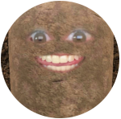

Minhas Redes Sociais
Quem sou eu?

Eu me chamo Emanuel Ferreira, tenho 32 anos e sou uma batata ambulante. Isso se da pelo fato de que eu falo muitas, apesar de ser uma batata, abobrinhas. Comumente sou conhecido como 'Dino' - isso mesmo, de Dinosauro. Que belo contraste, ne? Pense em mim como uma batata t-rex.
Como falar comigo?
 /odinomanu - Aqui voce pode me seguir la no Instagra1
/odinomanu - Aqui voce pode me seguir la no Instagra1 /odinomanu - Voce tambem pode me adicionar no Facebook
/odinomanu - Voce tambem pode me adicionar no Facebook /odinomanu - Me seguir no Twitter tambem, é uma opcao - talvez uma não muito sábia 🥸
/odinomanu - Me seguir no Twitter tambem, é uma opcao - talvez uma não muito sábia 🥸 /emanuel-ferreira - Por ultimo, mas nao menos importante (talvez o mais importante), podemos nos conectar pelo LinkedIn
/emanuel-ferreira - Por ultimo, mas nao menos importante (talvez o mais importante), podemos nos conectar pelo LinkedIn